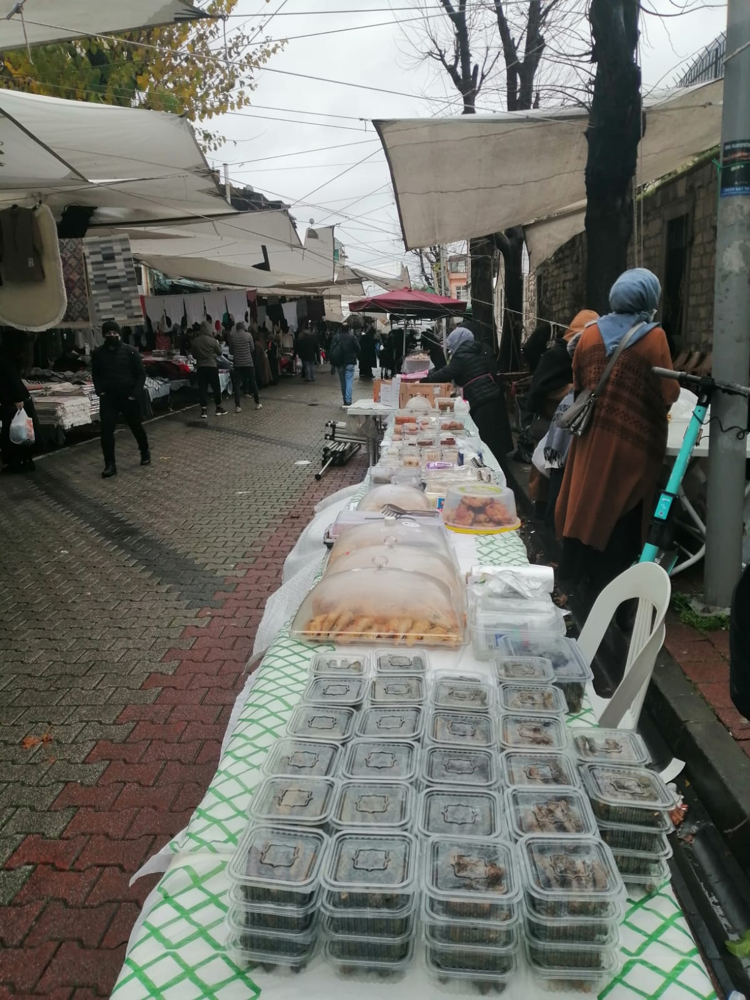
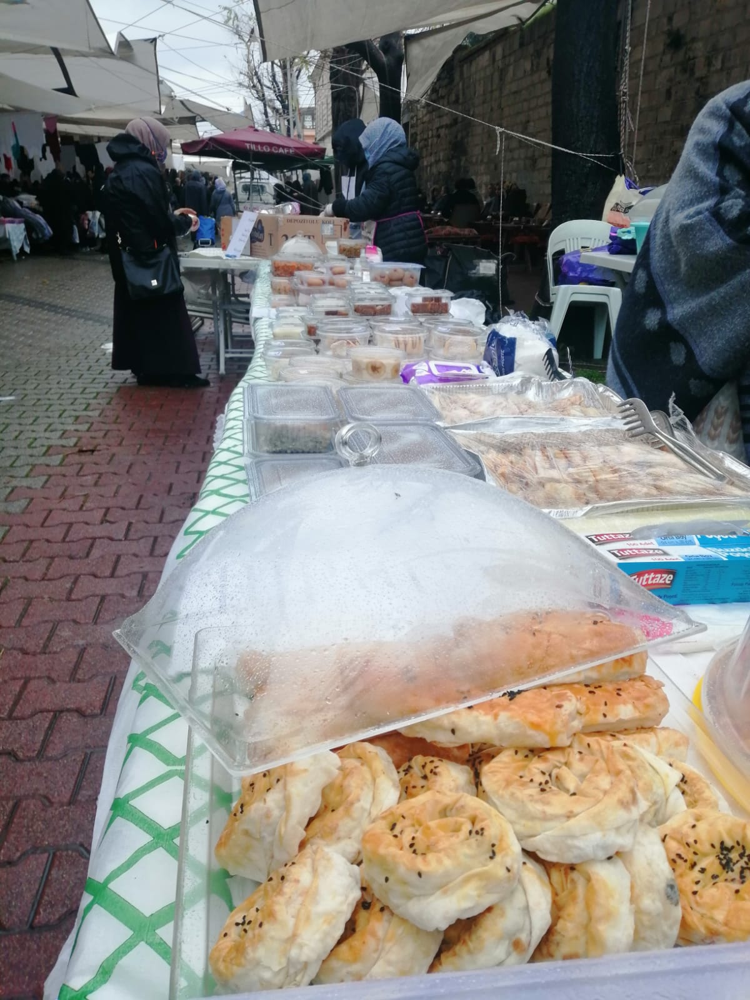
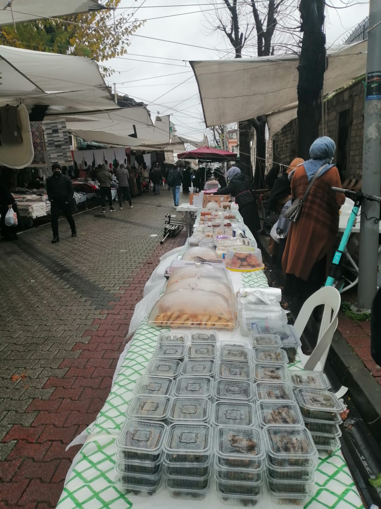
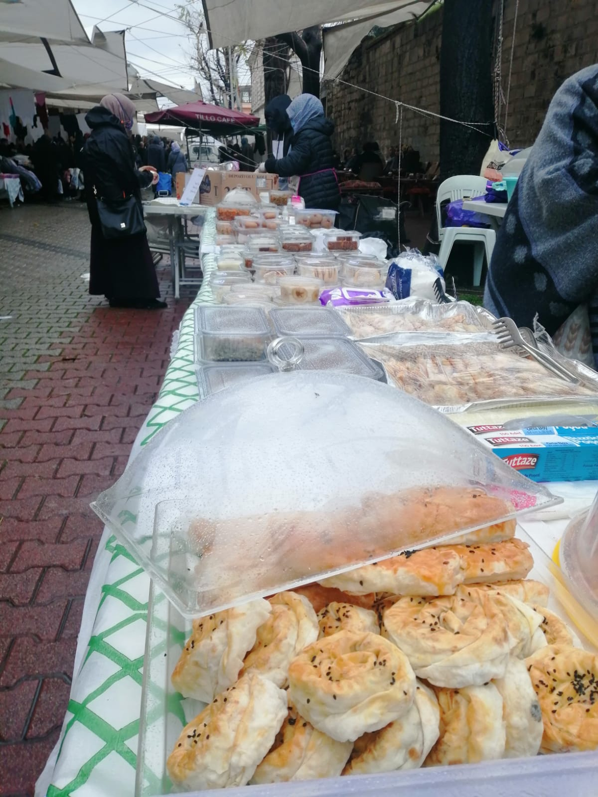

Derneğimizin Olağan Genel Kurul toplantısının 19.05.2024 tarihinde Saat:13,00’de, "İskenderpaşa Mah. Yüksek Lvz.Albay C.Tarhan Sk.No:15 Fatih / İSTANBUL" adresindeki Dernek Merkezinde yapılacaktır.
Bu toplantıda çoğunluk sağlanamadığı takdirde, ikinci toplantı yeter sayı aranmaksızın, 26.05.2024 tarihinde aynı yer ve saatte yapılacaktır. Üyelerimizin hazır bulunmaları önemle ilan olunur.
GÜNDEM:- Açılış ve yoklama
- Divan başkanlığı seçimi
- Saygı duruşu ve istiklal marşı
- Yönetim Kurulu Faaliyet Raporunun okunması ve ibrâsı
- Yeni Yönetim Kurulu ve Denetim Kurulu üyelerinin seçimi
- Dilek, temenniler ve Kapanış
Biz; Yedi Mevsim Mevâ’yız. Biz kimiz? Yedi kat gök ve yerin sâhibine inananlarız. Biz kimiz? Biz bedenlere ve gönüllere sığınılacak yer olmaya aday olanlarız. Biz Kimiz? Biz yedi mevsim gönüllere muhabbet ekmeye çalışanlarız. Biz kimiz? Yedi denize ulaşanların torunlarıyız. Biz kimiz? Yedi kıt’ada tüm insanlığa hayır isteyen, hayır dileyenleriz.
Maksadımız
İnsanı, insan kılan en kıymetli şey merhamet ve bu merhametin tezâhürü olarak, verebilmektir. Bizler, verdikçe çoğalacağımıza inananlarız. Maksadımız; verdikçe çoğalmaktır. Tüm coğrafyalarda, tüm insanlara ve varlığa, var edenin adıyla, şifâ, yurt, yuva, devâ olabilmektir. Yedi sayısı, yedi kat semânın ve yedi kat yerin sâhibiyle olan bağımızı hatırlattığı gibi, niyetimizin, hedefimizin, gayretimizin sınırlamalardan âzâde, seçmeci olmayan bütüncül yönünü de ifade etmektedir. Mevâ ise, niyetimizin kelamdaki tezahürü olarak; sığınılacak yer, yurt ve mesken anlamlarına gelmektedir.
Anlayışımız / Hedefimiz
Müslüman; çift dünyalı yaşayan, dünyâ için âhiretini, âhiret için dünyâyı görmezden gelmeyendir. Biz inanıyoruz ki; insan sâdece kendi için yaşayarak bu dünyâda var olmamalı, sâdece bu dünya için yaşamamalı. İnsanın ufku, inancı bu dünyâyı aşmalı, solmaz ve eskimez hedefler koymalı kişi kendisine, varacağı yeri ve yönü buna göre belirlemeli. Bizler bütün kâinat ile "BİR" olunca âhiret hayâtımızın güzel olacağına, iyiliğin bu dünyâda âhiretin, cennetin anahtarı olduğuna inananlarız. Ve inancımızla çoğalıp, büyümek için yola çıktık.
Hedeflerimiz; insanlığın iyiye ve iyiliğe ulaşmasıdır; iyilerin ve iyiliğin çoğalmasıdır. Mazlumun boynu büküklüğünün giderilmesi, gözlerinin, yüzünün, gönlünün gülmesi; iyiye, iyiliğe, mutluluğa, âit olma ve unutulmama duygusuna âşinâ olmasıdır. Elimizin erdiği, gözümüzün gördüğü, kulağımızın işittiği ve nefesimizin yettiği her mekân, zaman ve zeminde, maddî- mânevî iyilik ve yardımlarda bulunmak ve bu hâli sâdece bize âit değil, yaygınlaşmış bir iyilik hareketine dönüştürmektir.
Bir BESMELE çektik, bir niyet aldık, bir adım attık, bir yola çıktık, bizden önce bu yollardan geçmişlerin izlerine baktık, istikâmet eyledik, bir bayrak da biz alıp yürümeye durduk. Arzumuz, umûdumuz, duâmız odur ki, o bayrak elden ele nesillerce çok daha ileriye taşınsın, ebede intikâl eylesin, tâ kıyamete kadar dâim olsun.
İstanbul İtfaiyeciler Yetimhanesi Tadilat ve İşletim Projesi Protokolü
Yetimhane Desteği Kermesimiz
 



0212 635 1881
0543 591 5144
yedimevsimmeva@gmail.com
İskenderpaşa Mah. Yüksek
Levazım Albay A. Celalettin
Tarlan Sk. No:15/K:2 Fatih/İst.
Üyelik formunu indir
Tüzük
Yedi Mevsim Meva Derneğinin çalışmalarına destek olmak ve hayırlarına katkıda bulunmak isterseniz yardımlarınızı dernek hesabımıza ulaştırabilirsiniz.
KUVEYT TÜRK KATILIM BANKASI TR79 0020 5000 0101 3180 6000 01 Türk Lirası
KUVEYT TÜRK KATILIM BANKASI TR95 0020 5000 0101 3180 6001 01 Dolar
KUVEYT TÜRK KATILIM BANKASI TR680020500001013180600102 Euro
KUVEYT TÜRK KATILIM BANKASI TR410020500001013180600103 Euro
Swift Kodu: KTEFTRIS
ÖNEMLİ NOT: KIYMETLI ÜYEMIZ, DERNEK HESABIMIZA EFT/HAVALE YOLUYLA GONDERECEGINIZ PARALAR ICIN: 1- DERNEK HESABINA AİDAT GÖNDERILERINİDE ACIKLAMA KISMINA SADECE "AD SOYAD AİDAT" YAZMANIZ GEREKMEKTEDİR. 2- DERNEK HESABINA AİDAT HARİCİ HER TÜRLÜ PARA GÖNDERİLERİNDE ACIKLAMA KISMINA SADECE "AD SOYAD BAĞIŞ" ŞEKLINDE YAZMANIZ YETERLİDIR. BUNLAR HARİCİNDE KESİNLİKLE BANKA ACIKLAMA KISMINA BAŞKA İBARELER YAZMAYINIZ. TEŞEKKÜR EDERİZ...🌹